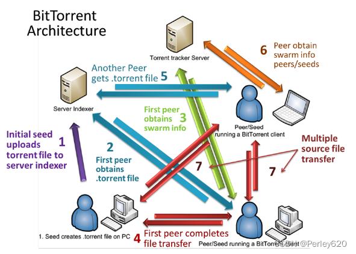
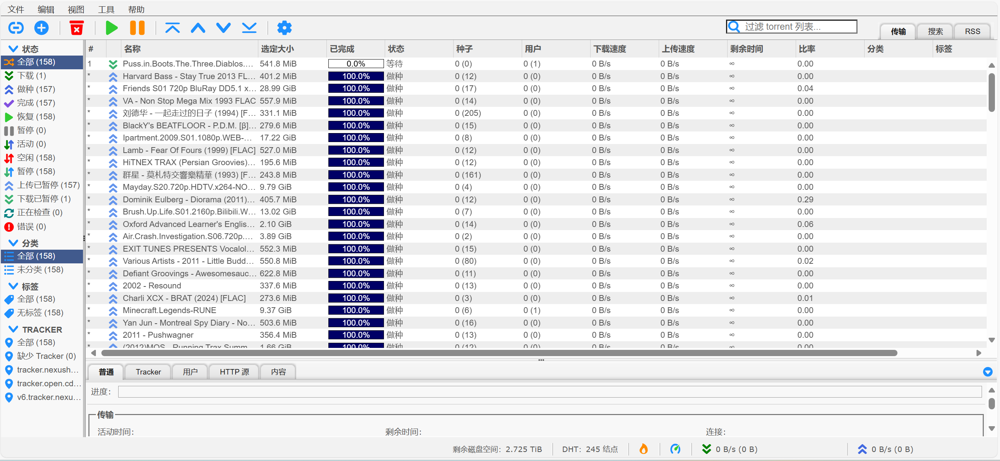

NAS（10）—— PT
PT 是什么？
要想知道什么是 PT，我们先得了解什么是 BT。
¶BT
2001年，Bram Cohen 发明了BitTorrent协议。
BitTorrent（简称 BT）是一个文件分发协议，每个下载者在下载的同时不断向其他下载者上传已下载的数据。而在 FTP、HTTP 协议中，每个下载者在下载自己所需文件的同时，各个下载者之间没有交互。当非常多的用户同时访问和下载服务器上的文件时，由于 FTP 服务器处理能力和带宽的限制，下载速度会急剧下降，有的用户可能访问不了服务器。BT 协议与 FTP 协议不同，特点是下载的人越多，下载速度越快，原因在于每个下载者将已下载的数据提供给其他下载者下载，充分利用了用户的上载带宽。通过一定的策略保证上传速度越快，下载速度也越快。

¶种子
根据 BitTorrent 协议，文件发布者会根据要发布的文件生成提供一个.torrent文件，即种子文件，也简称为“种子”。.torrent 文件本质上是文本文件，包含 Tracker 信息和文件信息两部分。Tracker 信息主要是 BT 下载中需要用到的 Tracker 服务器的地址和针对 Tracker 服务器的设置，文件信息是根据对目标的计算生成的。所以，种子文件就是被下载文件的“索引”。
¶Peer
Peer 可以理解成节点，或者等同于 Client 客户端。只要你在本地打开了 BT 软件，连接了 Swarm，有数据传输，就可以认为是一个 Peer。严格地来说，Peer 指的是还未下载完成的节点。一般认为所有连接到 Swarm 的客户端都叫做 Peer。
¶Swarm
Swarm 是一个用来描述当前分享的 Torrent 的所有可连接的 Peers 的术语，换句话说，一个 Swarm 也就是当前对同一个种子文件正在交换数据的 Peers。在 BT 最初的协议中，Peers 需要请求 Tracker 来获取 Swarm，也就是当前可连接的 Peers 列表。
¶Tracker
BitTorrent Tracker 是一个 HTTP/HTTPS 服务，通过 BitTorrent 协议间接地和 Peers 连接，它可以追踪哪些种子和 Peers 在一个 Swarm 中。为了初始化下载，客户端首先要和 Tracker 通信，获取一个当前可连接的 Peers 列表。Tracker 实际上并不参与任何数据的传输，并且也没有 Torrents 数据的备份。一旦 Peers 列表获取成功，Peers 之间的通信就可以不依赖 Tracker 进行。但是 Clients 会周期性地向 Tracker 发送数据报告，并换取新节点的信息。
基本上，Tracker 就是一台回应 HTTP GET 请求的服务器，请求中包含客户端整体传输的数据。回应信息包括一个 Peers 列表，让 Peers 参与 Torrent 传输。
¶DHT
DHT（Distributed Hash Table）网络用来寻找在 Swarm 中的 Peers 的 IP 地址，用来取代 Tracker 的功能。DHT 允许通过 Info Hash 来查询 Peers，而不需要通过 Trackers。
在原始的 BitTorrent 设计中，Tracker 是初始化时必须要经过的步骤，并且 Tracker 被部署在网络的单一节点上。这就意味着，如果 Tracker 故障，那么 Peers 就无法相互知道，结果就是 Torrent 死掉。而在 DHT 网络中，这个问题就不存在。二者的差别在于，不像 Tracker，DHT 不依赖于一个单一机器来初始化 Peers 之间的连接，而是将 DHT 网络中所有的节点都认为是潜在的节点，因此提供了容错机制。一旦获取到一个节点，客户端就可以使用该节点在 DHT 网络中找到更多的节点，然后就可以用 DHT 节点来获取 Peers 完成下载。
¶PXE
在 BitTorrent 文件共享网络中，PXE（Peer Exchange）用来维持共享同一个 Torrent 的一组 Peers。PXE 允许一组 Peers 中的成员自己在 Swarm 中交换群组成员信息，也就意味着可以减少对 Tracker 的依赖，减少对 Tracker 的轮询，也就减少了 Tracker 的负载。
但 PXE 并没有完全地消除对 Tracker 的依赖，一个 Peers 第一次要加入给定 Torrent 的 Swarm，就必须请求 Tracker。
¶磁力链接
根据原始的 BitTorrent 网络协议，.torrent 文件是从 Torrent 网站下载的。下载文件后，BitTorrent 客户端会从 .torrent 文件中计算信息密钥的 20 字节 SHA-1 哈希，它会在对 Tracker（或 DHT网络）的查询中使用该 ID 来唯一地识别种子并找出共享该 Torrent 的其他 Peers 的 IP 地址，随后它将连接并下载 .torrent 文件中的内容。
磁力链接更进一步，它已经计算得到该哈希值。 BT 客户端可以通过该 Hash，在 DHT 网络中查询，找到网络中同样共享着这个 Torrent 的 Peers。客户端会从其他 Peers 处下载这个 Torrent 文件。一旦获取到 torrent 文件，后面就是熟悉的流程了。
可以看到客户端依然需要依赖 .torrent 文件来完成初始化过程，因为 Torrent 包含着下载需要的必不可少的信息，但磁力链接使得 Client 不再需要依赖一个 Tracker 服务器，你甚至可以不需要从网站上下载一个 .torrent 文件。
另外，由于磁力链接是纯文本的，因此可以简单地将链接复制并粘贴到电子邮件，即时消息，博客或其他社交网络媒体中，以实现非常快速的分发。
¶PT
BT 没有分享率的要求，你可以随时停止上传，甚至也可以直接在 BT 下载软件中关闭上传都没问题。迅雷就是因为只从 BT 网络中白嫖别人的上传，而从不贡献上传，所以才被人称为 吸血雷。
为了解决这个问题，PT（Private Tracker）产生了。PT 对每个下载者都有分享率的要求，你下载完毕某个 Torrent，必须保持一定的做种时间，PT 网站会实时统计你的总下载和总上传比例，也就是你的分享率。如果你的分享率低于网站的要求，可能会被警告，降级或者封号。也因为有了分享率要求，PT 种子一般都会一直有人在做种，出现死种的几率也比较低，下载速度相较 BT 也更快更稳定。如果你想下载更多自己需要的资源，就要持续地为别人做种获取上传流量，提高分享率来获取对应下载的流量。
¶PT 站点
许多高清爱好者聚集在 PT 站，发布翻录的蓝光原盘、CD 资源以及录制的高清卫星电视讯号；得益于 Netflix、HBO、Apple TV 等高清流媒体在线视频平台的发展，近年也出现了一些 WEB-DL (Download from Web) 资源。
你可以从 PT 站下载到：
- Netflix / HBO / Apple TV / Paramount / Hulu / Disney+ 等海外流媒体平台的电视剧和电影
- 爱奇艺 / 腾讯视频 / 优酷等流媒体平台的电视剧和电影
- 包含特典和封面图片的蓝光动漫原盘
- 体育赛事和晚会庆典的卫星电视或 IPTV 录制
- 从 CD 抓取或从 Spotify / Tidal / Qobuz 等音乐平台下载的无损音乐
目前国内使用的 PT 站源码主要为基于浙江大学 xiazuojie 团队所开发的开源整站项目 NexusPHP，基于 PHP + MySQL + memcached。个别站点使用 Discuz! 进行二次开发。
关于 PT 站点的一些名词，如辅种、魔力值、做种率、H&R 等，你可以在 PT 站中的规则 / 说明部分找到，这里就不多言了。校内的 PT 站点为 NexusHD，目前使用校内邮箱即可注册。
PT 下载工具 —— 以 qBittorrent 为例
¶qBittorrent 使用
qBittorrent 的界面非常清晰，简洁易懂。只需要点击左上角的加号，即可添加本地种子。

¶通过 Docker 部署 qBittorrent
使用 Docker Compose：
1 | services: |
¶qBittorrent 与 HTTPS
如果通过 Nginx 反代 qBittorrent 并通过 HTTPS 访问服务时，可能会出现 Unauthorized 错误。
请按照以下步骤排除问题：
- 确保启动参数无误，尤其是配置文件的目录，必须是 qbittorrent 的父级目录，不可以到 qbittorrent 这一层。
- 如果你是在外网通过 IP 访问内网服务器，则需查看
qbittorrent.conf中，是否设置了WebUI\HostHeaderValidation=true参数，如有，请改为 false。 - 如果你是在外网通过域名访问内网服务器，则第二条同样适用；但安全起见，建议改为 true 并把值设置为你的域名。
- 如果你并未配置 HTTPS 证书，或未安装相关组件，则需查看
qbittorrent.conf中，是否设置了WebUI\HTTPS\Enabled=true参数，如有，请改为 false。 - 如果你设置了 Nginx 反向代理，则需要根据官方 Wiki 设置以下参数（请删除其他所有参数）：
1 | proxy_pass http://127.0.0.1:30000/; # 根据你的 IP 地址和端口号修改 |
下一章节：HTPC